Lab 3: User Environments
代码请见https://coding.net/u/yangminz/p/MITJOS/git。可以通过clone:
git clone https://git.coding.net/yangminz/MITJOS.git
方式获取代码并且cd目录、切换branch运行。
Introduction
In this lab you will implement the basic kernel facilities required to get a protected user-mode environment (i.e., "process") running. You will enhance the JOS kernel to set up the data structures to keep track of user environments, create a single user environment, load a program image into it, and start it running. You will also make the JOS kernel capable of handling any system calls the user environment makes and handling any other exceptions it causes.
Note: In this lab, the terms environment and process are interchangeable - both refer to an abstraction that allows you to run a program. We introduce the term "environment" instead of the traditional term "process" in order to stress the point that JOS environments and UNIX processes provide different interfaces, and do not provide the same semantics.
Getting Started
Use Git to commit your changes after your Lab 2 submission (if any), fetch the latest version of the course repository, and then create a local branch called lab3 based on our lab3 branch, origin/lab3:
athena% cd ~/6.828/lab athena% add git athena% git commit -am 'changes to lab2 after handin' Created commit 734fab7: changes to lab2 after handin 4 files changed, 42 insertions(+), 9 deletions(-) athena% git pull Already up-to-date. athena% git checkout -b lab3 origin/lab3 Branch lab3 set up to track remote branch refs/remotes/origin/lab3. Switched to a new branch "lab3" athena% git merge lab2 Merge made by recursive. kern/pmap.c | 42 +++++++++++++++++++ 1 files changed, 42 insertions(+), 0 deletions(-) athena%
Lab 3 contains a number of new source files, which you should browse:
| inc/ | env.h | Public definitions for user-mode environments |
| trap.h | Public definitions for trap handling | |
| syscall.h | Public definitions for system calls from user environments to the kernel | |
| lib.h | Public definitions for the user-mode support library | |
| kern/ | env.h | Kernel-private definitions for user-mode environments |
| env.c | Kernel code implementing user-mode environments | |
| trap.h | Kernel-private trap handling definitions | |
| trap.c | Trap handling code | |
| trapentry.S | Assembly-language trap handler entry-points | |
| syscall.h | Kernel-private definitions for system call handling | |
| syscall.c | System call implementation code | |
| lib/ | Makefrag | Makefile fragment to build user-mode library, obj/lib/libjos.a |
| entry.S | Assembly-language entry-point for user environments | |
| libmain.c | User-mode library setup code called from entry.S | |
| syscall.c | User-mode system call stub functions | |
| console.c | User-mode implementations of putchar and getchar, providing console I/O | |
| exit.c | User-mode implementation of exit | |
| panic.c | User-mode implementation of panic | |
| user/ | * | Various test programs to check kernel lab 3 code |
In addition, a number of the source files we handed out for lab2 are modified in lab3. To see the differences, you can type:
$ git diff lab2
You may also want to take another look at the lab tools guide, as it includes information on debugging user code that becomes relevant in this lab.
Lab Requirements
This lab is divided into two parts, A and B. Part A is due a week after this lab was assigned; you should commit your changes and make handin your lab before the Part A deadline, even though your code may not yet pass all of the grade script tests. (If it does, great!) You only need to have all the grade script tests passing by the Part B deadline at the end of the second week.
As in lab 2, you will need to do all of the regular exercises described in the lab and at least one challenge problem (for the entire lab, not for each part). Write up brief answers to the questions posed in the lab and a one or two paragraph description of what you did to solve your chosen challenge problem in a file called answers-lab3.txt in the top level of your lab directory. (If you implement more than one challenge problem, you only need to describe one of them in the write-up.) Do not forget to include the answer file in your submission with git add answers-lab3.txt.
Inline Assembly
In this lab you may find GCC's inline assembly language feature useful, although it is also possible to complete the lab without using it. At the very least, you will need to be able to understand the fragments of inline assembly language ("asm" statements) that already exist in the source code we gave you. You can find several sources of information on GCC inline assembly language on the class reference materials page.
Part A: User Environments and Exception Handling
The new include file inc/env.h
contains basic definitions for user environments in JOS.
Read it now.
The kernel uses the Env data structure
to keep track of each user environment.
In this lab you will initially create just one environment,
but you will need to design the JOS kernel
to support multiple environments;
lab 4 will take advantage of this feature
by allowing a user environment to fork other environments.
As you can see in kern/env.c, the kernel maintains three main global variables pertaining to environments:
struct Env *envs = NULL; // All environments struct Env *curenv = NULL; // The current env static struct Env *env_free_list; // Free environment list
Once JOS gets up and running,
the envs pointer points to an array of Env structures
representing all the environments in the system.
In our design,
the JOS kernel will support a maximum of NENV
simultaneously active environments,
although there will typically be far fewer running environments
at any given time.
(NENV is a constant #define'd in inc/env.h.)
Once it is allocated,
the envs array will contain
a single instance of the Env data structure
for each of the NENV possible environments.
The JOS kernel keeps all of the inactive Env structures
on the env_free_list.
This design allows easy allocation and
deallocation of environments,
as they merely have to be added to or removed from the free list.
The kernel uses the curenv symbol
to keep track of the currently executing environment at any given time.
During boot up, before the first environment is run,
curenv is initially set to NULL.
Environment State
The Env structure
is defined in inc/env.h as follows
(although more fields will be added in future labs):
struct Env {
struct Trapframe env_tf; // Saved registers
struct Env *env_link; // Next free Env
envid_t env_id; // Unique environment identifier
envid_t env_parent_id; // env_id of this env's parent
enum EnvType env_type; // Indicates special system environments
unsigned env_status; // Status of the environment
uint32_t env_runs; // Number of times environment has run
// Address space
pde_t *env_pgdir; // Kernel virtual address of page dir
};
Here's what the Env fields are for:
- env_tf:
- This structure, defined in inc/trap.h, holds the saved register values for the environment while that environment is not running: i.e., when the kernel or a different environment is running. The kernel saves these when switching from user to kernel mode, so that the environment can later be resumed where it left off.
- env_link:
- This is a link to the next
Envon theenv_free_list.env_free_listpoints to the first free environment on the list. - env_id:
- The kernel stores here a value
that uniquely identifiers
the environment currently using this
Envstructure (i.e., using this particular slot in theenvsarray). After a user environment terminates, the kernel may re-allocate the sameEnvstructure to a different environment - but the new environment will have a differentenv_idfrom the old one even though the new environment is re-using the same slot in theenvsarray. - env_parent_id:
- The kernel stores here the
env_idof the environment that created this environment. In this way the environments can form a “family tree,” which will be useful for making security decisions about which environments are allowed to do what to whom. - env_type:
- This is used to distinguish special environments. For most
environments, it will be
ENV_TYPE_USER. We'll introduce a few more types for special system service environments in later labs. - env_status:
- This variable holds one of the following values:
ENV_FREE:- Indicates that the
Envstructure is inactive, and therefore on theenv_free_list. ENV_RUNNABLE:- Indicates that the
Envstructure represents an environment that is waiting to run on the processor. ENV_RUNNING:- Indicates that the
Envstructure represents the currently running environment. ENV_NOT_RUNNABLE:- Indicates that the
Envstructure represents a currently active environment, but it is not currently ready to run: for example, because it is waiting for an interprocess communication (IPC) from another environment. ENV_DYING:- Indicates that the
Envstructure represents a zombie environment. A zombie environment will be freed the next time it traps to the kernel. We will not use this flag until Lab 4.
- env_pgdir:
- This variable holds the kernel virtual address of this environment's page directory.
Like a Unix process, a JOS environment couples the concepts of
"thread" and "address space". The thread is defined primarily by the
saved registers (the env_tf field), and the address space
is defined by the page directory and page tables pointed to by
env_pgdir. To run an
environment, the kernel must set up the CPU with both the saved
registers and the appropriate address space.
Our struct Env is analogous to struct proc
in xv6. Both structures hold the environment's (i.e., process's)
user-mode register state in a Trapframe
structure. In JOS,
individual environments do not have their own kernel stacks as
processes do in xv6. There can be only one JOS environment active in
the kernel at a time, so JOS needs only a
single kernel stack.
Allocating the Environments Array
In lab 2,
you allocated memory in mem_init()
for the pages[] array,
which is a table the kernel uses to keep track of
which pages are free and which are not.
You will now need to modify mem_init() further
to allocate a similar array of Env structures,
called envs.
Exercise 1.
Modify mem_init() in kern/pmap.c
to allocate and map the envs array.
This array consists of
exactly NENV instances of the Env
structure allocated much like how you allocated the
pages array.
Also like the pages array, the memory backing
envs should also be mapped user read-only at
UENVS (defined in inc/memlayout.h) so
user processes can read from this array.
You should run your code and make sure
check_kern_pgdir() succeeds.
首先我们要确定一下这道题要干什么。我感觉上面的题目描述也不是很清晰，所以可以直接根据运行的错误信息查看check函数：
// check envs array (new test for lab 3)
n = ROUNDUP(NENV*sizeof(struct Env), PGSIZE);
for (i = 0; i < n; i += PGSIZE)
assert(check_va2pa(pgdir, UENVS + i) == PADDR(envs) + i);
可见这部分检查的是UENVS+i的物理地址，也就是检查从UENVS开始的每个页的物理地址和数组envs，而这部分就像之前说的，在kern/env.c中定义。同时，从：
n = ROUNDUP(NENV*sizeof(struct Env), PGSIZE);
我们也可以看到boot_alloc应该分配多少空间给envs。所以envs这部分代码如下：
envs = (struct Env *)boot_alloc(sizeof(struct Env) * NENV);
memset(envs, 0, sizeof(struct Env) * NENV);
还要考虑UENVS的问题，这个像之前说的，定义在描述内存分层的文件inc/memlayout.h中。这是建立映射的问题，所以依然沿用lab2写的boot_map_region()即可，只需要注意修改几处参数就行。
boot_map_region(
kern_pgdir, UENVS,
ROUNDUP(sizeof(struct Env) * NENV, PGSIZE),
PADDR(envs),
(PTE_U | PTE_P)
);
这样就通过了：
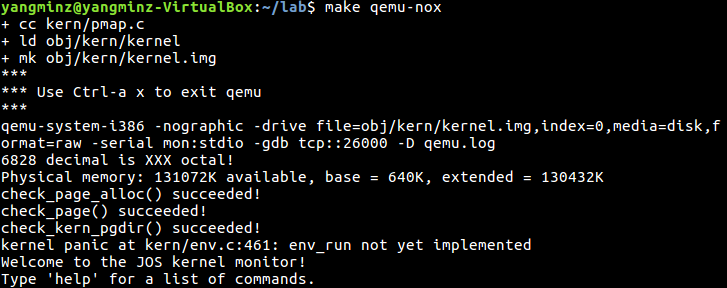
Creating and Running Environments
You will now write the code in kern/env.c necessary to run a user environment. Because we do not yet have a filesystem, we will set up the kernel to load a static binary image that is embedded within the kernel itself. JOS embeds this binary in the kernel as a ELF executable image.
The Lab 3 GNUmakefile generates a number of binary images in the obj/user/ directory. If you look at kern/Makefrag, you will notice some magic that "links" these binaries directly into the kernel executable as if they were .o files. The -b binary option on the linker command line causes these files to be linked in as "raw" uninterpreted binary files rather than as regular .o files produced by the compiler. (As far as the linker is concerned, these files do not have to be ELF images at all - they could be anything, such as text files or pictures!) If you look at obj/kern/kernel.sym after building the kernel, you will notice that the linker has "magically" produced a number of funny symbols with obscure names like _binary_obj_user_hello_start, _binary_obj_user_hello_end, and _binary_obj_user_hello_size. The linker generates these symbol names by mangling the file names of the binary files; the symbols provide the regular kernel code with a way to reference the embedded binary files.
In i386_init() in kern/init.c you'll see code to run
one of these binary images in an environment. However, the critical
functions to set up user environments are not complete; you will need
to fill them in.
Exercise 2. In the file env.c, finish coding the following functions:
-
env_init() - Initialize all of the
Envstructures in theenvsarray and add them to theenv_free_list. Also callsenv_init_percpu, which configures the segmentation hardware with separate segments for privilege level 0 (kernel) and privilege level 3 (user). -
env_setup_vm() - Allocate a page directory for a new environment and initialize the kernel portion of the new environment's address space.
-
region_alloc() - Allocates and maps physical memory for an environment
-
load_icode() - You will need to parse an ELF binary image, much like the boot loader already does, and load its contents into the user address space of a new environment.
-
env_create() - Allocate an environment with
env_allocand callload_icodeto load an ELF binary into it. -
env_run() - Start a given environment running in user mode.
As you write these functions,
you might find the new cprintf verb %e
useful -- it prints a description corresponding to an error code.
For example,
r = -E_NO_MEM;
panic("env_alloc: %e", r);
will panic with the message "env_alloc: out of memory".
这个又是很麻烦的、不写好通过env_run()运行就比较难debug的情况。其中除了env_init()在kern/init.c的i386_init()中有调用以外，其他函数都要通过i386_init()调用env_run()来运行。
env_init()
在之前的mem_init()中，envs的空间已经被分配好了，所以在env_init()中只需要将数组元素全部标记为空闲、赋值并且插入到链表中即可：
void env_init(void)
{
// Set up envs array
// LAB 3: Your code here.
int i;
env_free_list = NULL;
for (i = NENV - 1; i >= 0; i--) {
envs[i].env_id = 0;
envs[i].env_parent_id = 0;
envs[i].env_type = ENV_TYPE_USER;
envs[i].env_status = ENV_FREE;
envs[i].env_runs = 0;
envs[i].env_pgdir = NULL;
envs[i].env_link = env_free_list;
env_free_list = &envs[i];
}
// Per-CPU part of the initialization
env_init_percpu();
}
这里有一个奇怪的问题，如果设置i的类型为size_t，就像之前在page_init()中的一样，那么for (i = NENV - 1; i >= 0; i--)就会越界，我也没搞清楚为什么，所以就将i的类型换成int。另外，之所以要设定i--，是因为要让env_free_list指向envs[0]。
env_setup_vm()
函数env_init()为进程单独地分配page directory。可以看到,JOS已经写好了分配物理页的语句：
// Allocate a page for the page directory
if (!(p = page_alloc(ALLOC_ZERO)))
return -E_NO_MEM;
struct PageInfo类型的指针p指向物理页，让e->env_pgdir指向这个物理页对应的pgdir就行，这和之前page部分的通过虚拟地址找pte的过程相反，这个过程通过page2kva()完成，在其内部先通过page2pa()找到对应的物理地址，然后KADDR()找到对应的虚拟地址va。
一般来说，应该通过va查询它在pgdir中的页索引序号，然后从pgdir数组中调出pde。但是在这里并没有pgdir，而我们的目标是创造pgdir，所以这个返回的虚拟地址就可以看做页索引pgdir了，然后将kern_pgdir的内容拷贝进去，也就是注释中提示的，把kern_pgdir看做一个template。
static int env_setup_vm(struct Env *e)
{
int i;
struct PageInfo *p = NULL;
// Allocate a page for the page directory
if (!(p = page_alloc(ALLOC_ZERO)))
return -E_NO_MEM;
// LAB 3: Your code here.
p->pp_ref += 1;
pde_t * pde = page2kva(p);
memcpy(pde, kern_pgdir, PGSIZE);
e->env_pgdir = pde;
// UVPT maps the env's own page table read-only.
// Permissions: kernel R, user R
e->env_pgdir[PDX(UVPT)] = PADDR(e->env_pgdir) | PTE_P | PTE_U;
return 0;
}
region_alloc()
这个函数首先要根据要求把va和va+len ROUND处理好。然后虚拟地址空间[va, va+len]，序号上是[va, va+len]/PGSIZE，要分配给e->env_pgdir。这个函数和上一个env_setup_vm()是连贯的，env_setup_vm()先给e分配一个页索引的空间，这里regin_alloc()为这个索引开辟[va, va+len]的虚拟地址空间并且建立映射、设置permission。
在这里要组织e->env_pgdir的虚拟地址空间[va, va+len]，只能通过page_insert()来完成了：
实际上这部分代码是有问题的，为了突出这一点所以这里没有修改，而是保留了错误的代码。
static void region_alloc(struct Env *e, void *va, size_t len)
{
// LAB 3: Your code here.
struct PageInfo * pp;
int i = 0, ret = 0;
va = ROUNDDOWN(va, PGSIZE);
len = ROUNDUP(len, PGSIZE);
for(i = 0; i < len; i += PGSIZE){
pp = page_alloc(0);
if(!pp)
panic("failed to allocate pa for env!\n");
ret = page_insert(e->env_pgdir, pp, va, PTE_U | PTE_W);
if(ret)
panic("failed to insert page!\n");
va += PGSIZE;
}
}
load_icode()
要做这题，需要理解boot/main.c的过程：当CPU启动时，CPU将BIOS加载到内存并且执行；BIOS初始化设备、设置中断、从启动装置中读取第一块sector并且跳转到这里；假定bootloader(boot/main.c)存在第一块sector中，然后就开始执行bootloader；bootloader从boot.S开始启动，设置好栈以便运行C程序，然后就可以调用C函数bootmain()。
bootmain()是这样工作的：
void bootmain(void)
{
struct Proghdr *ph, *eph;
// 从硬盘的第一页中读取ELF头部 - ELFHDR
readseg((uint32_t) ELFHDR, SECTSIZE*8, 0);
// 通过magic number判断ELF是否有效
if (ELFHDR->e_magic != ELF_MAGIC)
goto bad;
// 设置指向程序段的指针
ph = (struct Proghdr *) ((uint8_t *) ELFHDR + ELFHDR->e_phoff);
// 统计ELFHDR中程序段的数量
eph = ph + ELFHDR->e_phnum;
for (; ph < eph; ph++)
// 将ELFHDR中所有的程序段信息读入ph
readseg(ph->p_pa, ph->p_memsz, ph->p_offset);
// 从ELF头中调用入口点
((void (*)(void)) (ELFHDR->e_entry))();
bad:
outw(0x8A00, 0x8A00);
outw(0x8A00, 0x8E00);
while (1)
/* do nothing */;
}
搞清楚这个机制之后，就可以写load_icode()了。相对方便的是，不需要从硬盘中读入信息了，这些内容装载于形参binary之中。另外要注意的是，根据注释的要求，并不是像bootmain()一样加载所有的段，而是只加载一部分，这部分的代码如下：
实际上这部分代码是有问题的，为了突出这一点所以这里没有修改，而是保留了错误的代码。
// LAB 3: Your code here.
struct Elf * elfhdr = (struct Elf *)binary;
struct Proghdr * ph, * eph;
if (elfhdr->e_magic != ELF_MAGIC)
panic("Not a valid ELF!\n");
ph = (struct Proghdr *) ((uint8_t *) elfhdr + elfhdr->e_phoff);
eph = ph + elfhdr->e_phnum;
for (; ph < eph; ph++){
// only load segments with ph->p_type == ELF_PROG_LOAD
if(ph->p_type == ELF_PROG_LOAD){
// All page protection bits should be user read/write
region_alloc(e, (void *)ph->p_va, ph->p_memsz);
// The ph->p_filesz bytes from the ELF binary, starting at
// 'binary + ph->p_offset', should be copied to virtual address
// ph->p_va
// move data directly into the va stored in the ELF binary:
memmove((void *)ph->p_va, binary+ph->p_offset, ph->p_filesz);
// Any remaining memory bytes should be cleared to zero
memset((void *)ph->p_va + ph->p_filesz,0,(ph->p_memsz - ph->p_filesz));
}
}
// the environment starts executing at the program's entry point
e->env_tf.tf_eip = elfhdr->e_entry;
可以看到，基本上和bootmain()一样。其中需要说的是，memmove没有用memcpy，而是直接将数据进行移动，这个是注释的要求，也比memcpy要简单。要找到这个函数，只要找到memcpy，然后看一看周围就可以了。另外，设置entry point的方式也和bootmain()不同，在bootmain()中直接调用了，在这里要设置好跳转，通过env_tf保存的eip寄存器值实现。
还有一个初始化栈的映射，为它映射一个页：
// LAB 3: Your code here.
region_alloc(e, (void *)USTACKTOP - PGSIZE, PGSIZE);
这里的代码还有问题，debug是通过env_create()完成的。
env_create()
这个函数直接按照注释写就可以了：调用env_alloc()给struct Env * e赋值，调用load_icode加载elf信息，最后设置一下数据类型：
void env_create(uint8_t *binary, enum EnvType type)
{
// LAB 3: Your code here.
struct Env * e = NULL;
int ret = -100;
ret = env_alloc(&e, 0);
if(ret == -E_NO_FREE_ENV)
panic("No Free Environment!\n");
else if(ret != 0)
panic(" Cannot Initialize the kernel vm layout!\n");
load_icode(e, binary);
e->env_type = type;
}
到这个函数这里，JOS就会调用了，所以可以对之前写过的函数进行debug。这时候回去debug，发现load_icode()那里有错误，以至于无法运行。我自己没有找出来，所以去看了其他人的代码，发现load_icode()要内联两个movl指令：
lcr3(PADDR(e->env_pgdir));
lcr3(PADDR(kern_pgdir));
我去查了一下80386手册：
The physical address of the current page directory is stored in the CPU register CR3, also called the page directory base register (PDBR). Memory management software has the option of using one page directory for all tasks, one page directory for each task, or some combination of the two.
======
Page tables and the PDBR in CR3 can be initialized in either real-address mode or in protected mode; however, the paging enabled (PG) bit of CR0 cannot be set until the processor is in protected mode. PG may be set simultaneously with PE, or later. When PG is set, the PDBR in CR3 should already be initialized with a physical address that points to a valid page directory. The initialization procedure should adopt one of the following strategies to ensure consistent addressing before and after paging is enabled:
The page that is currently being executed should map to the same physical addresses both before and after PG is set.
A JMP instruction should immediately follow the setting of PG.
这才想起来这里有一个关于保护模式的坑，所以寄存器CR3不设置就无法运行。
env_run()
在这里又遇到了问题：curenv是空指针，并没有分配空间。我刚开始条件判断if(curenv->env_status == ENV_RUNNING)的时候，总是触发内存错误。反过来一想，这就是注释中所说的“think about what other states it can be in”吧。在boot up时，第一个environment运行之前，curenv都是设置为NULL的，而初始化函数中，刚开始根本没有对curenv的赋值。这样一来判断条件就要先判断一下是不是空指针了：
void env_run(struct Env *e)
{ // LAB 3: Your code here.
// 1.Set curenv ENV_RUNNABLE if it is ENV_RUNNING
if(curenv){
if(curenv->env_status == ENV_RUNNING)
curenv->env_status = ENV_RUNNABLE;
}
// 2. Set 'curenv' to the new environment
curenv = e;
// 3. Set its status to ENV_RUNNING
e->env_status = ENV_RUNNING;
// 4. Update its 'env_runs' counter
e->env_runs += 1;
// 5. Use lcr3() to switch to its address space
lcr3(PADDR(e->env_pgdir));
// Use env_pop_tf() to restore;
env_pop_tf(&(e->env_tf));
//panic("env_run not yet implemented");
}
到这里依然能触发Triple fault，这个我一开始很困惑，怎么改都不对。后来打印了一下变量，发现实际上e->env_tf是没有被赋值的，所以在env_pop_tf()这里造成了错误。在i386_init()kern/init.c中，一共调用了mem_init(), env_init(), trap_init(), env_run()四个函数，其中env_init()和env_run()是我们自己写的，都没有对env_tf赋值，实际上这两个函数也没办法赋值，因此这个应该是属于trap_init()的任务。
实际上当往下做题的时候就会发现，tran_init()目前尚未竣工，且下面有说到finally give up with what's known as a "triple fault"。所以这道题我就做到这里，剩下的错误在下面的题目中解决。
gdb debug
根据下面的题目说明，接下来应该用gdb去调试以验证进入用户模式。在设置断点：
+ symbol-file obj/kern/kernel (gdb) break kern/env.c : env_pop_tf Breakpoint 1 at 0xf01034ad: file kern/env.c, line 490. (gdb) c Continuing. The target architecture is assumed to be i386 => 0xf01034ad: push %ebp Breakpoint 1, env_pop_tf (tf=0xf01a0000) at kern/env.c:490 490 { (gdb) si
之后单步执行，直到完成iret指令，可以看到之后第一条用户指令。在obj/user/hello.asm中找到sys_cputs()函数，我的机器上，它的最后一条指令是：
800a77: cd 30 int $0x30
断点运行到这里，可以执行：
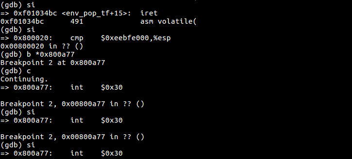
Below is a call graph of the code up to the point where the user code is invoked. Make sure you understand the purpose of each step.
-
start(kern/entry.S) -
i386_init(kern/init.c)-
cons_init -
mem_init -
env_init -
trap_init(still incomplete at this point) -
env_create -
env_run-
env_pop_tf
-
-
Once you are done you should compile your kernel and run it under QEMU.
If all goes well, your system should enter user space and execute the
hello binary until it makes a system call with the
int instruction. At that point there will be trouble, since
JOS has not set up the hardware to allow any kind of transition
from user space into the kernel.
When the CPU discovers that it is not set up to handle this system
call interrupt, it will generate a general protection exception, find
that it can't handle that, generate a double fault exception, find
that it can't handle that either, and finally give up with what's
known as a "triple fault". Usually, you would then see the CPU reset
and the system reboot. While this is important for legacy
applications (see
this blog post for an explanation of why), it's a pain for kernel
development, so with the 6.828 patched QEMU you'll instead see a
register dump and a "Triple fault." message.
We'll address this problem shortly, but for now we can use the
debugger to check that we're entering user mode. Use make
qemu-gdb and set a GDB breakpoint at env_pop_tf,
which should be the last function you hit before actually entering user mode.
Single step through this function using si;
the processor should enter user mode after the iret instruction.
You should then see the first instruction
in the user environment's executable,
which is the cmpl instruction at the label start
in lib/entry.S.
Now use b *0x... to set a breakpoint at the
int $0x30 in sys_cputs() in hello
(see obj/user/hello.asm for the user-space address).
This int is the system call to display a character to
the console.
If you cannot execute as far as the int,
then something is wrong with your address space setup
or program loading code;
go back and fix it before continuing.
Handling Interrupts and Exceptions
At this point,
the first int $0x30 system call instruction in user space
is a dead end:
once the processor gets into user mode,
there is no way to get back out.
You will now need to implement
basic exception and system call handling,
so that it is possible for the kernel to recover control of the processor
from user-mode code.
The first thing you should do
is thoroughly familiarize yourself with
the x86 interrupt and exception mechanism.
Exercise 3. Read Chapter 9, Exceptions and Interrupts in the 80386 Programmer's Manual (or Chapter 5 of the IA-32 Developer's Manual), if you haven't already.
这道阅读题就不单独写了，阅读所得的知识都融于接下来完成的中断与异常的回答之中。
In this lab we generally follow Intel's terminology for interrupts, exceptions, and the like. However, terms such as exception, trap, interrupt, fault and abort have no standard meaning across architectures or operating systems, and are often used without regard to the subtle distinctions between them on a particular architecture such as the x86. When you see these terms outside of this lab, the meanings might be slightly different.
Basics of Protected Control Transfer
Exceptions and interrupts are both "protected control transfers," which cause the processor to switch from user to kernel mode (CPL=0) without giving the user-mode code any opportunity to interfere with the functioning of the kernel or other environments. In Intel's terminology, an interrupt is a protected control transfer that is caused by an asynchronous event usually external to the processor, such as notification of external device I/O activity. An exception, in contrast, is a protected control transfer caused synchronously by the currently running code, for example due to a divide by zero or an invalid memory access.
In order to ensure that these protected control transfers are actually protected, the processor's interrupt/exception mechanism is designed so that the code currently running when the interrupt or exception occurs does not get to choose arbitrarily where the kernel is entered or how. Instead, the processor ensures that the kernel can be entered only under carefully controlled conditions. On the x86, two mechanisms work together to provide this protection:
The Interrupt Descriptor Table. The processor ensures that interrupts and exceptions can only cause the kernel to be entered at a few specific, well-defined entry-points determined by the kernel itself, and not by the code running when the interrupt or exception is taken.
The x86 allows up to 256 different interrupt or exception entry points into the kernel, each with a different interrupt vector. A vector is a number between 0 and 255. An interrupt's vector is determined by the source of the interrupt: different devices, error conditions, and application requests to the kernel generate interrupts with different vectors. The CPU uses the vector as an index into the processor's interrupt descriptor table (IDT), which the kernel sets up in kernel-private memory, much like the GDT. From the appropriate entry in this table the processor loads:
- the value to load into the instruction pointer (EIP) register, pointing to the kernel code designated to handle that type of exception.
- the value to load into the code segment (CS) register, which includes in bits 0-1 the privilege level at which the exception handler is to run. (In JOS, all exceptions are handled in kernel mode, privilege level 0.)
The Task State Segment. The processor needs a place to save the old processor state before the interrupt or exception occurred, such as the original values of EIP and CS before the processor invoked the exception handler, so that the exception handler can later restore that old state and resume the interrupted code from where it left off. But this save area for the old processor state must in turn be protected from unprivileged user-mode code; otherwise buggy or malicious user code could compromise the kernel.
For this reason, when an x86 processor takes an interrupt or trap that causes a privilege level change from user to kernel mode, it also switches to a stack in the kernel's memory. A structure called the task state segment (TSS) specifies the segment selector and address where this stack lives. The processor pushes (on this new stack) SS, ESP, EFLAGS, CS, EIP, and an optional error code. Then it loads the CS and EIP from the interrupt descriptor, and sets the ESP and SS to refer to the new stack.
Although the TSS is large and can potentially serve a variety of purposes, JOS only uses it to define the kernel stack that the processor should switch to when it transfers from user to kernel mode. Since "kernel mode" in JOS is privilege level 0 on the x86, the processor uses the ESP0 and SS0 fields of the TSS to define the kernel stack when entering kernel mode. JOS doesn't use any other TSS fields.
Types of Exceptions and Interrupts
All of the synchronous exceptions
that the x86 processor can generate internally
use interrupt vectors between 0 and 31,
and therefore map to IDT entries 0-31.
For example,
a page fault always causes an exception through vector 14.
Interrupt vectors greater than 31 are only used by
software interrupts,
which can be generated by the int instruction, or
asynchronous hardware interrupts,
caused by external devices when they need attention.
In this section we will extend JOS to handle the internally generated x86 exceptions in vectors 0-31. In the next section we will make JOS handle software interrupt vector 48 (0x30), which JOS (fairly arbitrarily) uses as its system call interrupt vector. In Lab 4 we will extend JOS to handle externally generated hardware interrupts such as the clock interrupt.
An Example
Let's put these pieces together and trace through an example. Let's say the processor is executing code in a user environment and encounters a divide instruction that attempts to divide by zero.
- The processor switches to the stack defined by the
SS0 and ESP0 fields of the TSS,
which in JOS will hold the values
GD_KDandKSTACKTOP, respectively. - The processor pushes the exception parameters on the
kernel stack, starting at address
KSTACKTOP:+--------------------+ KSTACKTOP | 0x00000 | old SS | " - 4 | old ESP | " - 8 | old EFLAGS | " - 12 | 0x00000 | old CS | " - 16 | old EIP | " - 20 <---- ESP +--------------------+ - Because we're handling a divide error, which is interrupt vector 0 on the x86, the processor reads IDT entry 0 and sets CS:EIP to point to the handler function described by the entry.
- The handler function takes control and handles the exception, for example by terminating the user environment.
For certain types of x86 exceptions, in addition to the "standard" five words above, the processor pushes onto the stack another word containing an error code. The page fault exception, number 14, is an important example. See the 80386 manual to determine for which exception numbers the processor pushes an error code, and what the error code means in that case. When the processor pushes an error code, the stack would look as follows at the beginning of the exception handler when coming in from user mode:
+--------------------+ KSTACKTOP
| 0x00000 | old SS | " - 4
| old ESP | " - 8
| old EFLAGS | " - 12
| 0x00000 | old CS | " - 16
| old EIP | " - 20
| error code | " - 24 <---- ESP
+--------------------+
Nested Exceptions and Interrupts
The processor can take exceptions and interrupts both from kernel and user mode. It is only when entering the kernel from user mode, however, that the x86 processor automatically switches stacks before pushing its old register state onto the stack and invoking the appropriate exception handler through the IDT. If the processor is already in kernel mode when the interrupt or exception occurs (the low 2 bits of the CS register are already zero), then the CPU just pushes more values on the same kernel stack. In this way, the kernel can gracefully handle nested exceptions caused by code within the kernel itself. This capability is an important tool in implementing protection, as we will see later in the section on system calls.
If the processor is already in kernel mode and takes a nested exception, since it does not need to switch stacks, it does not save the old SS or ESP registers. For exception types that do not push an error code, the kernel stack therefore looks like the following on entry to the exception handler:
+--------------------+ <---- old ESP
| old EFLAGS | " - 4
| 0x00000 | old CS | " - 8
| old EIP | " - 12
+--------------------+
For exception types that push an error code, the processor pushes the error code immediately after the old EIP, as before.
There is one important caveat to the processor's nested exception capability. If the processor takes an exception while already in kernel mode, and cannot push its old state onto the kernel stack for any reason such as lack of stack space, then there is nothing the processor can do to recover, so it simply resets itself. Needless to say, the kernel should be designed so that this can't happen.
Setting Up the IDT
You should now have the basic information you need in order to set up the IDT and handle exceptions in JOS. For now, you will set up the IDT to handle interrupt vectors 0-31 (the processor exceptions). We'll handle system call interrupts later in this lab and add interrupts 32-47 (the device IRQs) in a later lab.
The header files inc/trap.h and kern/trap.h contain important definitions related to interrupts and exceptions that you will need to become familiar with. The file kern/trap.h contains definitions that are strictly private to the kernel, while inc/trap.h contains definitions that may also be useful to user-level programs and libraries.
Note: Some of the exceptions in the range 0-31 are defined by Intel to be reserved. Since they will never be generated by the processor, it doesn't really matter how you handle them. Do whatever you think is cleanest.
The overall flow of control that you should achieve is depicted below:
IDT trapentry.S trap.c
+----------------+
| &handler1 |---------> handler1: trap (struct Trapframe *tf)
| | // do stuff {
| | call trap // handle the exception/interrupt
| | // ... }
+----------------+
| &handler2 |--------> handler2:
| | // do stuff
| | call trap
| | // ...
+----------------+
.
.
.
+----------------+
| &handlerX |--------> handlerX:
| | // do stuff
| | call trap
| | // ...
+----------------+
Each exception or interrupt should have
its own handler in trapentry.S
and trap_init() should initialize the IDT with the addresses
of these handlers.
Each of the handlers should build a struct Trapframe
(see inc/trap.h) on the stack and call
trap() (in trap.c)
with a pointer to the Trapframe.
trap() then handles the
exception/interrupt or dispatches to a specific
handler function.
Exercise 4.
Edit trapentry.S and trap.c and
implement the features described above. The macros
TRAPHANDLER and TRAPHANDLER_NOEC in
trapentry.S should help you, as well as the T_*
defines in inc/trap.h. You will need to add an
entry point in trapentry.S (using those macros)
for each trap defined in inc/trap.h, and
you'll have to provide _alltraps which the
TRAPHANDLER macros refer to. You will
also need to modify trap_init() to initialize the
idt to point to each of these entry points
defined in trapentry.S; the SETGATE
macro will be helpful here.
Your _alltraps should:
- push values to make the stack look like a struct Trapframe
- load
GD_KDinto %ds and %es pushl %espto pass a pointer to the Trapframe as an argument to trap()call trap(cantrapever return?)
Consider using the pushal
instruction; it fits nicely with the layout of the struct
Trapframe.
Test your trap handling code using some of the test programs in the user directory that cause exceptions before making any system calls, such as user/divzero. You should be able to get make grade to succeed on the divzero, softint, and badsegment tests at this point.
kern/trapentry.S中增加一个entry point
从参考手册中可以看到，80386中，从一个中断ID/中断向量找到中断处理程序/可执行的中断代码段的过程，在JOS中，是这样的：
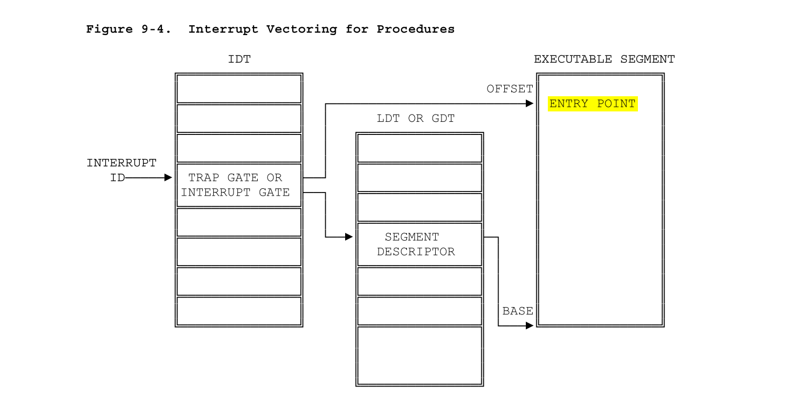
根据inc/trap.h中宏定义的Trap numbers：
// Trap numbers // These are processor defined: #define T_DIVIDE 0 // divide error #define T_DEBUG 1 // debug exception ... ... ... ...
作为索引在kern/trap.c中找到相应的执行名：
static const char *trapname(int trapno)
{
static const char * const excnames[] = {
"Divide error",
"Debug",
...
也根据Trap number在kern/trapentry.S中找到handler，然后给kern/trap.c:trap()调用。
根据参考中列出的系统预留中断类型和两个宏HRAPHANDLER, TRAPHANDLER_NOEC，来填写trapentry.S中的这段代码。这两个宏也都在trapentry.S中，从形参看到要name和num。但是这个和常规的C语言宏不同，从注释看这个宏貌似直接将数据写到ELF之类的东西里面了，也就是说作为参数的name直接作为函数名存入符号表，类型申明为function，引起num的错误之后跳转到_alltraps。因此，这个name部分可能是随便写的，num根据inc/trap.h宏定义的，也就是80386预留的中断类型来写：
| Identifier | Description |
|---|---|
| 0 | Divide error |
| 1 | Debug exceptions |
| 2 | Nonmaskable interrupt |
| 3 | Breakpoint (one-byte INT 3 instruction) |
| 4 | Overflow (INTO instruction) |
| 5 | Bounds check (BOUND instruction) |
| 6 | Invalid opcode |
| 7 | Coprocessor not available |
| 8 | Double fault |
| 9 | (reserved) |
| 10 | Invalid TSS |
| 11 | Segment not present |
| 12 | Stack exception |
| 13 | General protection |
| 14 | Page fault |
| 15 | (reserved) |
| 16 | Coprecessor error |
| 17-31 | (reserved) |
| 32-255 | Available for external interrupts via INTR pin |
.text节代码：
.text
/*
* Lab 3: Your code here for generating entry points for the different traps.
*/
TRAPHANDLER_NOEC(int_divide, T_DIVIDE)
TRAPHANDLER_NOEC(int_debug, T_DEBUG)
TRAPHANDLER_NOEC(int_nmi, T_NMI)
TRAPHANDLER_NOEC(int_brkpt, T_BRKPT)
TRAPHANDLER_NOEC(int_oflow, T_OFLOW)
TRAPHANDLER_NOEC(int_bound, T_BOUND)
TRAPHANDLER_NOEC(int_illop, T_ILLOP)
TRAPHANDLER_NOEC(int_device, T_DEVICE)
TRAPHANDLER(int_dblflt, T_DBLFLT)
/* RESERVED */
TRAPHANDLER(int_tss, T_TSS)
TRAPHANDLER(int_segnp, T_SEGNP)
TRAPHANDLER(int_stack, T_STACK)
TRAPHANDLER(int_gpflt, T_GPFLT)
TRAPHANDLER(int_pgflt, T_PGFLT)
/* RESERVED */
TRAPHANDLER(int_fperr, T_FPERR)
TRAPHANDLER(int_align, T_ALIGN)
TRAPHANDLER(int_mchk, T_MCHK)
TRAPHANDLER(int_simderr, T_SIMDERR)
这两个宏向堆栈压入中断向量之后，跳转到标号为_alltraps的段继续。
提供_alltraps
_alltraps是所有trap handler共同执行的代码，根据蓝框中的题目描述，一共有四个要求，分别完成。
首先要向栈中倒序压入寄存器，以使堆栈的结构像Trapframe：
struct Trapframe {
struct PushRegs tf_regs;
uint16_t tf_es;
uint16_t tf_padding1;
uint16_t tf_ds;
uint16_t tf_padding2;
uint32_t tf_trapno;
/* below here defined by x86 hardware */
uint32_t tf_err;
uintptr_t tf_eip;
uint16_t tf_cs;
uint16_t tf_padding3;
uint32_t tf_eflags;
/* below here only when crossing rings, such as from user to kernel */
uintptr_t tf_esp;
uint16_t tf_ss;
uint16_t tf_padding4;
} __attribute__((packed));
由于env_pop_tf()之后，已经设置到了eip，这样只需要压入err及以后的trapno, ds, es, regs中的寄存器：ds, es（按顺序）就可以了。
/*
* Lab 3: Your code here for _alltraps
*/
_alltraps:
/* 1.push values to make the stack look like a struct Trapframe */
pushl %ds
pushl %es
pushal
/* 2.load GD_KD into %ds and %es */
movl $GD_KD, %eax
movw %ax, %ds
movw %ax, %es
/* 3.pushl %esp to pass a pointer to the Trapframe as an argument to trap() */
pushl %esp
movl $0, %ebp
/* 4.call trap (can trap ever return?) */
call trap
其中有一个注意点，在Trapframe用来了tf_padding这样的成员来对齐，所以在汇编中将数值传给%eax之后，取%ax就可以了。函数调用要注意esp, ebp的操作。
kern/trap.c中初始化中断描述符表 - IDT
这里我用 find . -name "*.c" | xargs grep "idt_init()" 都没有找到参考.pdf中说的idt_init()：
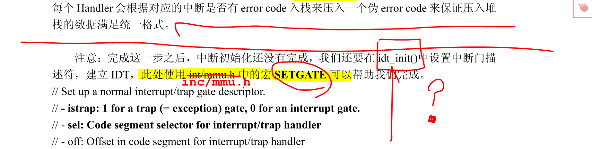
根据我的推断，这个idt_init()应该换成了trap_init()。这部分代码如下：
void trap_init(void)
{
extern struct Segdesc gdt[];
// LAB 3: Your code here.
extern void int_divide();
extern void int_debug();
extern void int_nmi();
extern void int_brkpt();
extern void int_oflow();
extern void int_bound();
extern void int_illop();
extern void int_device();
extern void int_dblflt();
/* RESERVED */
extern void int_tss();
extern void int_segnp();
extern void int_stack();
extern void int_gpflt();
extern void int_pgflt();
/* RESERVED */
extern void int_fperr();
extern void int_align();
extern void int_mchk();
extern void int_simderr();
SETGATE(idt[T_DIVIDE], 0, GD_KT, int_divide, 0);
SETGATE(idt[T_DEBUG], 0, GD_KT, int_debug, 0);
SETGATE(idt[T_NMI], 0, GD_KT, int_nmi, 0);
SETGATE(idt[T_BRKPT], 0, GD_KT, int_brkpt, 0);
SETGATE(idt[T_OFLOW], 0, GD_KT, int_oflow, 0);
SETGATE(idt[T_BOUND], 0, GD_KT, int_bound, 0);
SETGATE(idt[T_ILLOP], 0, GD_KT, int_illop, 0);
SETGATE(idt[T_DEVICE], 0, GD_KT, int_device, 0);
SETGATE(idt[T_DBLFLT], 0, GD_KT, int_dblflt, 0);
SETGATE(idt[T_TSS], 0, GD_KT, int_tss, 0);
SETGATE(idt[T_SEGNP], 0, GD_KT, int_segnp, 0);
SETGATE(idt[T_STACK], 0, GD_KT, int_stack, 0);
SETGATE(idt[T_GPFLT], 0, GD_KT, int_gpflt, 0);
SETGATE(idt[T_PGFLT], 0, GD_KT, int_pgflt, 0);
SETGATE(idt[T_FPERR], 0, GD_KT, int_fperr, 0);
SETGATE(idt[T_ALIGN], 0, GD_KT, int_align, 0);
SETGATE(idt[T_MCHK], 0, GD_KT, int_mchk, 0);
SETGATE(idt[T_SIMDERR], 0, GD_KT, int_simderr, 0);
// Per-CPU setup
trap_init_percpu();
}
到这里其实make grade应该通过divzero, softint, 和badsegment，但是我后两个挂了，查了发现是page fault没有通过，但是我看了一下后面的题，好像这部分是PART B的题：
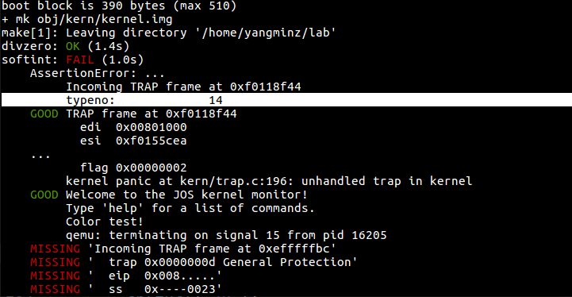
Challenge!
不做！You probably have a lot of very similar code
right now, between the lists of TRAPHANDLER in
trapentry.S and their installations in
trap.c. Clean this up. Change the macros in
trapentry.S to automatically generate a table for
trap.c to use. Note that you can switch between
laying down code and data in the assembler by using the
directives .text and .data.
这题不做
Questions
Answer the following questions in your answers-lab3.txt:
- What is the purpose of having an individual handler function for each exception/interrupt? (i.e., if all exceptions/interrupts were delivered to the same handler, what feature that exists in the current implementation could not be provided?)
- Did you have to do anything
to make the user/softint program behave correctly?
The grade script expects it to produce a general protection
fault (trap 13), but softint's code says
int $14. Why should this produce interrupt vector 13? What happens if the kernel actually allows softint'sint $14instruction to invoke the kernel's page fault handler (which is interrupt vector 14)?
Question 1
每一种exception/interrupt拥有一个独立handler是因为每一种exception/interrupt除了有共同的处理代码_alltraps之外，还有自己独立的处理代码。
Question 2
看到这道题，我感觉自己被坑了。。。上面说到，最后make grade的时候，出现了14号的page fault，原来实际上14号的page fault只能由内核而非用户程序抛出，而softint使用了int，所以grade实际上期望softint抛出General Protection Fault错误的。但是总归应该通过PART A呀，我查了好长时间（过程不表，满是血泪），才发现原来是前面的region_alloc()函数的映射写错了，修改如下：
static void region_alloc(struct Env *e, void *va, size_t len)
{
// LAB 3: Your code here.
struct PageInfo * pp;
int ret = 0;
void * start = (void *)ROUNDDOWN((uint32_t)va, PGSIZE);
void * end = (void *)ROUNDUP((uint32_t)va+len, PGSIZE);
void * i;
for(i = start; i < end; i += PGSIZE){
pp = page_alloc(0);
if(!pp)
panic("failed to allocate pa for env!\n");
ret = page_insert(e->env_pgdir, pp, i, PTE_U | PTE_W);
if(ret)
panic("failed to insert page!\n");
}
}
这样终于他妈的通过了：
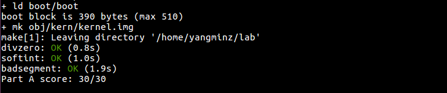
This concludes part A of the lab. Don't forget to add answers-lab3.txt, commit your changes, and run make handin before the part A deadline. (If you've already completed part B by that time, you only need to submit once.)
Part B: Page Faults, Breakpoints Exceptions, and System Calls
Now that your kernel has basic exception handling capabilities, you will refine it to provide important operating system primitives that depend on exception handling.
Handling Page Faults
The page fault exception, interrupt vector 14 (T_PGFLT),
is a particularly important one that we will exercise heavily
throughout this lab and the next.
When the processor takes a page fault,
it stores the linear (i.e., virtual) address that caused the fault
in a special processor control register, CR2.
In trap.c
we have provided the beginnings of a special function,
page_fault_handler(),
to handle page fault exceptions.
Exercise 5.
Modify trap_dispatch()
to dispatch page fault exceptions
to page_fault_handler().
You should now be able to get make grade
to succeed on the faultread, faultreadkernel,
faultwrite, and faultwritekernel tests.
If any of them don't work, figure out why and fix them.
Remember that you can boot JOS into a particular user program
using make run-x or make run-x-nox.
解决之前region_alloc()的bug之后，处理下面的问题就正常一点了。要完成trap调度 tran_dispatch() 来处理页错误比较简单，根据tf_trapno调用函数即可。因为后面还有breakpoint和syscall的情形，所以写成switch。写完这两个一起贴函数。
通过faultread, faultreadkernel, faultwrite, faultwritekernel:
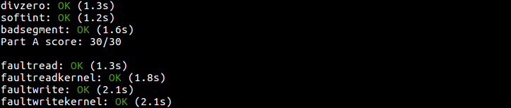
You will further refine the kernel's page fault handling below, as you implement system calls.
The Breakpoint Exception
The breakpoint exception, interrupt vector 3 (T_BRKPT),
is normally used to allow debuggers
to insert breakpoints in a program's code
by temporarily replacing the relevant program instruction
with the special 1-byte int3 software interrupt instruction.
In JOS we will abuse this exception slightly
by turning it into a primitive pseudo-system call
that any user environment can use to invoke the JOS kernel monitor.
This usage is actually somewhat appropriate
if we think of the JOS kernel monitor as a primitive debugger.
The user-mode implementation of panic() in lib/panic.c,
for example,
performs an int3 after displaying its panic message.
Exercise 6.
Modify trap_dispatch()
to make breakpoint exceptions invoke the kernel monitor.
You should now be able to get make grade
to succeed on the breakpoint test.
这里一样先不写了，等下一个Exercise贴完整的代码。通过breakpoint:
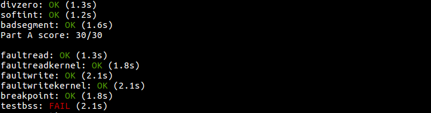
Challenge!
Modify the JOS kernel monitor so that
you can 'continue' execution from the current location
(e.g., after the int3,
if the kernel monitor was invoked via the breakpoint exception),
and so that you can single-step one instruction at a time.
You will need to understand certain bits
of the EFLAGS register
in order to implement single-stepping.
Optional: If you're feeling really adventurous, find some x86 disassembler source code - e.g., by ripping it out of QEMU, or out of GNU binutils, or just write it yourself - and extend the JOS kernel monitor to be able to disassemble and display instructions as you are stepping through them. Combined with the symbol table loading from lab 1, this is the stuff of which real kernel debuggers are made.
首先是一如既往地在kern/monitor.h中申明函数，在kern/monitor.c中添加新的命令step，调用函数mon_step()，然后在mon_step中实现单步执行。
像题目中说的，为了完成step命令，先要理解eflags寄存器：
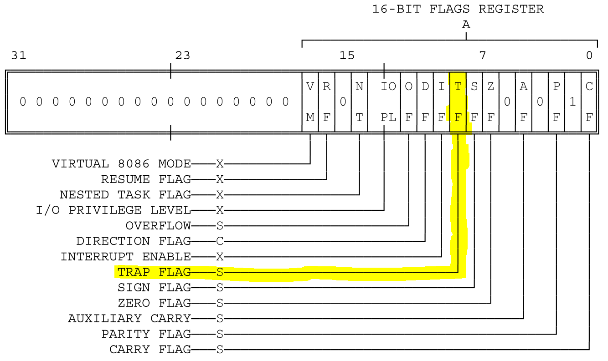
在80386手册中有写到：
TF (Trap Flag, bit 8)Setting TF puts the processor into single-step mode for debugging. In this mode, the CPU automatically generates an exception after each instruction, allowing a program to be inspected as it executes each instruction. Single-stepping is just one of several debugging features of the 80386.
也就是说，如果TF为置1，cpu就能进入单步调试模式，而清零则禁用。这样只要改一下TF位就可以了：
// lab3 single step
extern struct Env * curenv;
extern void env_run(struct Env *e);
int mon_step(int argc, char **argv, struct Trapframe *tf){
if(argc != 1){
cprintf("Not expected format! Usage\n");
cprintf(" > step\n");
return 0;
}
if(tf == NULL){
cprintf("single step error!\n");
return 0;
}
tf->tf_eflags |= FL_TF;
cprintf("now eip at\t%08x\n", tf->tf_eip);
env_run(curenv);
return 0;
}
在终端输入step命令：
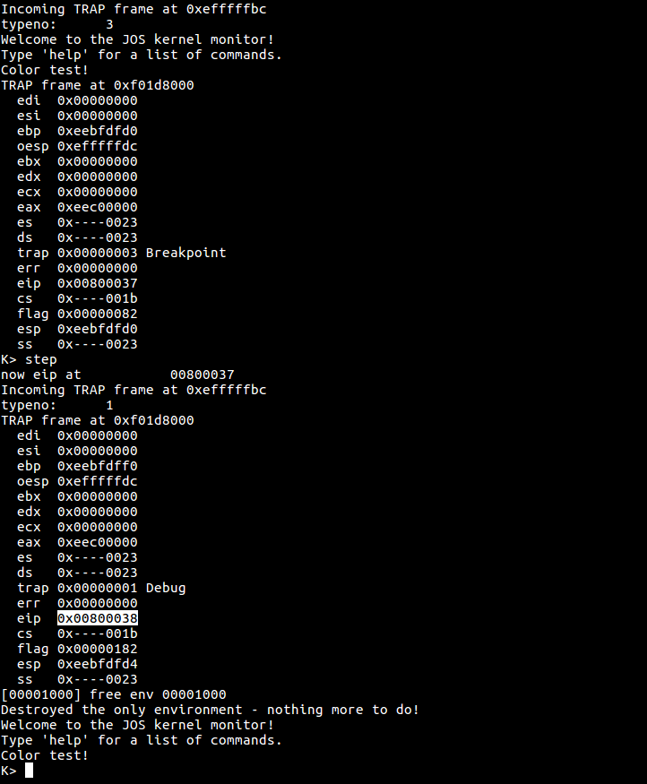
可以看到eip确实增加了，说明确实在向前调试。
我不感到非常adventurous，所以Optional就不做了。
Questions
- The break point test case will either generate a break point
exception or a general protection fault depending on how you initialized
the break point entry in the IDT (i.e., your call to
SETGATEfromtrap_init). Why? How do you need to set it up in order to get the breakpoint exception to work as specified above and what incorrect setup would cause it to trigger a general protection fault? - What do you think is the point of these mechanisms, particularly in light of what the user/softint test program does?
Question 3
产生general protection IDT异常的原因是因为断点只能由内核访问，所以如果用户态访问的话会产生保护错误。在trap_init()中设置断点的时候，我们有：
SETGATE(idt[T_BRKPT], 0, GD_KT, int_brkpt, 0);
这样就把它设置成了只有内核态才能访问。如果重新设置：
SETGATE(idt[T_BRKPT], 0, GD_KT, int_brkpt, 3);
用户态就也能访问了。
Question 4
没读懂题意。。。但这些机制的目的都应该是保护内核代码或者给程序员提供方便吧。
System calls
User processes ask the kernel to do things for them by invoking system calls. When the user process invokes a system call, the processor enters kernel mode, the processor and the kernel cooperate to save the user process's state, the kernel executes appropriate code in order to carry out the system call, and then resumes the user process. The exact details of how the user process gets the kernel's attention and how it specifies which call it wants to execute vary from system to system.
In the JOS kernel, we will use the int
instruction, which causes a processor interrupt.
In particular, we will use int $0x30
as the system call interrupt.
We have defined the constant
T_SYSCALL to 48 (0x30) for you. You will have to
set up the interrupt descriptor to allow user processes to
cause that interrupt. Note that interrupt 0x30 cannot be
generated by hardware, so there is no ambiguity caused by
allowing user code to generate it.
The application will pass the system call number and
the system call arguments in registers. This way, the kernel won't
need to grub around in the user environment's stack
or instruction stream. The
system call number will go in %eax, and the
arguments (up to five of them) will go in %edx,
%ecx, %ebx, %edi,
and %esi, respectively. The kernel passes the
return value back in %eax. The assembly code to
invoke a system call has been written for you, in
syscall() in lib/syscall.c. You
should read through it and make sure you understand what
is going on.
Exercise 7.
Add a handler in the kernel
for interrupt vector T_SYSCALL.
You will have to edit kern/trapentry.S and
kern/trap.c's trap_init(). You
also need to change trap_dispatch() to handle the
system call interrupt by calling syscall()
(defined in kern/syscall.c)
with the appropriate arguments,
and then arranging for
the return value to be passed back to the user process
in %eax.
Finally, you need to implement syscall() in
kern/syscall.c.
Make sure syscall() returns -E_INVAL
if the system call number is invalid.
You should read and understand lib/syscall.c
(especially the inline assembly routine) in order to confirm
your understanding of the system call interface.
Handle all the system calls listed in inc/syscall.h by
invoking the corresponding kernel function for each call.
Run the user/hello program under your kernel (make run-hello). It should print "hello, world" on the console and then cause a page fault in user mode. If this does not happen, it probably means your system call handler isn't quite right. You should also now be able to get make grade to succeed on the testbss test.
根据参考.pdf，我们应该把T_SYSCALL加入中断描述符：
/* SYSTEM CALL */
TRAPHANDLER_NOEC(system_call, T_SYSCALL)
// SYSTEM CALL
extern void system_call();
// SYSTEM CALL
SETGATE(idt[T_SYSCALL], 0, GD_KT, system_call, 3);
其中要注意的是，为了能让用户进程调用，需要将inc/mmu.h中的SETGATE宏的dpl参数设为3。
然后要在trap_dispatch()的case中加入SYSTEM CALL的情形，结合前两题的分页错误、断点，代码如下：
static void
trap_dispatch(struct Trapframe *tf)
{
// Handle processor exceptions.
// LAB 3: Your code here.
switch(tf->tf_trapno)
{
case T_PGFLT:
page_fault_handler(tf);
return;
case T_BRKPT:
monitor(tf);
return;
case T_SYSCALL:
tf->tf_regs.reg_eax = syscall(
tf->tf_regs.reg_eax,
tf->tf_regs.reg_edx,
tf->tf_regs.reg_ecx,
tf->tf_regs.reg_ebx,
tf->tf_regs.reg_edi,
tf->tf_regs.reg_esi
);
return;
}
// Unexpected trap: The user process or the kernel has a bug.
print_trapframe(tf);
if (tf->tf_cs == GD_KT)
panic("unhandled trap in kernel");
else {
env_destroy(curenv);
return;
}
}
为何要调用syscall()、应该传入哪些参数，在参考.pdf和MIT的文档中都说的很清楚了。
下面开始写kern/syscall.c。关于syscall()，在参考.pdf中有写，通过inc/syscall.h中的一个枚举结构中的SYS_cputs, SYS_cgetc, SYS_getenvid, SYS_env_destory这几个调用号来调用即可：
int32_t
syscall(uint32_t syscallno, uint32_t a1, uint32_t a2, uint32_t a3, uint32_t a4, uint32_t a5)
{
// LAB 3: Your code here.
switch (syscallno) {
case SYS_cputs:
sys_cputs((const char *)a1, a2);
return 0;
case SYS_cgetc:
return sys_cgetc();
case SYS_getenvid:
return sys_getenvid();
case SYS_env_destroy:
return sys_env_destroy(a1);
default:
return -E_INVAL;
}
}
完成到这里，make grade就通过了testbss:
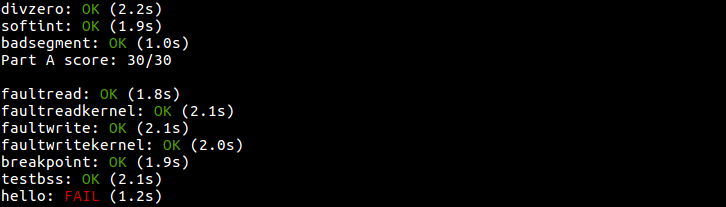
Challenge!
不做：Implement system calls using the sysenter and
sysexit instructions instead of using
int 0x30 and iret.
The sysenter/sysexit instructions were designed
by Intel to be faster than int/iret. They do
this by using registers instead of the stack and by making
assumptions about how the segmentation registers are used.
The exact details of these instructions can be found in Volume
2B of the Intel reference manuals.
The easiest way to add support for these instructions in JOS
is to add a sysenter_handler in
kern/trapentry.S that saves enough information about
the user environment to return to it, sets up the kernel
environment, pushes the arguments to
syscall() and calls syscall()
directly. Once syscall() returns, set everything
up for and execute the sysexit instruction.
You will also need to add code to kern/init.c to
set up the necessary model specific registers (MSRs). Section
6.1.2 in Volume 2 of the AMD Architecture Programmer's Manual
and the reference on SYSENTER in Volume 2B of the Intel
reference manuals give good descriptions of the relevant MSRs.
You can find an implementation of wrmsr to add to
inc/x86.h for writing to these MSRs here.
Finally, lib/syscall.c must be changed to support
making a system call with sysenter. Here is a
possible register layout for the sysenter
instruction:
eax - syscall number edx, ecx, ebx, edi - arg1, arg2, arg3, arg4 esi - return pc ebp - return esp esp - trashed by sysenter
GCC's inline assembler will automatically save registers that
you tell it to load values directly into. Don't forget to
either save (push) and restore (pop) other registers that you
clobber, or tell the inline assembler that you're clobbering
them. The inline assembler doesn't support saving
%ebp, so you will need to add code to save and
restore it yourself. The return
address can be put into %esi by using an
instruction like leal after_sysenter_label,
%%esi.
Note that this only supports 4 arguments, so you will need to leave the old method of doing system calls around to support 5 argument system calls. Furthermore, because this fast path doesn't update the current environment's trap frame, it won't be suitable for some of the system calls we add in later labs.
You may have to revisit your code once we enable asynchronous
interrupts in the next lab. Specifically, you'll need to
enable interrupts when returning to the user process, which
sysexit doesn't do for you.
User-mode startup
A user program starts running at the top of
lib/entry.S. After some setup, this code
calls libmain(), in lib/libmain.c.
You should modify libmain() to initialize the global pointer
thisenv to point at this environment's
struct Env in the envs[] array.
(Note that lib/entry.S has already defined envs
to point at the UENVS mapping you set up in Part A.)
Hint: look in inc/env.h and use
sys_getenvid.
libmain() then calls umain, which,
in the case of the hello program, is in
user/hello.c. Note that after printing
"hello, world", it tries to access
thisenv->env_id. This is why it faulted earlier.
Now that you've initialized thisenv properly,
it should not fault.
If it still faults, you probably haven't mapped the
UENVS area user-readable (back in Part A in
pmap.c; this is the first time we've actually
used the UENVS area).
Exercise 8.
Add the required code to the user library, then
boot your kernel. You should see user/hello
print "hello, world" and then print "i
am environment 00001000".
user/hello then attempts to "exit"
by calling sys_env_destroy()
(see lib/libmain.c and lib/exit.c).
Since the kernel currently only supports one user environment,
it should report that it has destroyed the only environment
and then drop into the kernel monitor.
You should be able to get make grade
to succeed on the hello test.
很容易根据找到当前进程控制块的进程编号，调用函数kern/syscall.c : sys_getenvid()即可。得到当前进程的进程编号之后，根据参考.pdf，用ENVX处理就可以作为全局数组envs[]的偏置加上去了：
void libmain(int argc, char **argv)
{
// set thisenv to point at our Env structure in envs[].
// LAB 3: Your code here.
thisenv = envs + ENVX(sys_getenvid());
if (argc > 0)
binaryname = argv[0];
umain(argc, argv);
exit();
}
这样就通过了hello:
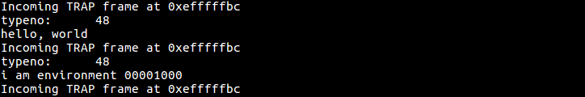
Page faults and memory protection
Memory protection is a crucial feature of an operating system, ensuring that bugs in one program cannot corrupt other programs or corrupt the operating system itself.
Operating systems usually rely on hardware support to implement memory protection. The OS keeps the hardware informed about which virtual addresses are valid and which are not. When a program tries to access an invalid address or one for which it has no permissions, the processor stops the program at the instruction causing the fault and then traps into the kernel with information about the attempted operation. If the fault is fixable, the kernel can fix it and let the program continue running. If the fault is not fixable, then the program cannot continue, since it will never get past the instruction causing the fault.
As an example of a fixable fault, consider an automatically extended stack. In many systems the kernel initially allocates a single stack page, and then if a program faults accessing pages further down the stack, the kernel will allocate those pages automatically and let the program continue. By doing this, the kernel only allocates as much stack memory as the program needs, but the program can work under the illusion that it has an arbitrarily large stack.
System calls present an interesting problem for memory protection. Most system call interfaces let user programs pass pointers to the kernel. These pointers point at user buffers to be read or written. The kernel then dereferences these pointers while carrying out the system call. There are two problems with this:
- A page fault in the kernel is potentially a lot more serious than a page fault in a user program. If the kernel page-faults while manipulating its own data structures, that's a kernel bug, and the fault handler should panic the kernel (and hence the whole system). But when the kernel is dereferencing pointers given to it by the user program, it needs a way to remember that any page faults these dereferences cause are actually on behalf of the user program.
- The kernel typically has more memory permissions than the user program. The user program might pass a pointer to a system call that points to memory that the kernel can read or write but that the program cannot. The kernel must be careful not to be tricked into dereferencing such a pointer, since that might reveal private information or destroy the integrity of the kernel.
For both of these reasons the kernel must be extremely careful when handling pointers presented by user programs.
You will now solve these two problems with a single mechanism that scrutinizes all pointers passed from userspace into the kernel. When a program passes the kernel a pointer, the kernel will check that the address is in the user part of the address space, and that the page table would allow the memory operation.
Thus, the kernel will never suffer a page fault due to dereferencing a user-supplied pointer. If the kernel does page fault, it should panic and terminate.
Exercise 9.
Change kern/trap.c to panic if a page
fault happens in kernel mode.
Hint: to determine whether a fault happened in user mode or
in kernel mode, check the low bits of the tf_cs.
Read user_mem_assert in kern/pmap.c
and implement user_mem_check in that same file.
Change kern/syscall.c to sanity check arguments to system calls.
Boot your kernel, running user/buggyhello. The environment should be destroyed, and the kernel should not panic. You should see:
[00001000] user_mem_check assertion failure for va 00000001 [00001000] free env 00001000 Destroyed the only environment - nothing more to do!
Finally, change debuginfo_eip in
kern/kdebug.c to call user_mem_check on
usd, stabs, and
stabstr. If you now run
user/breakpoint, you should be able to run
backtrace from the kernel monitor and see the
backtrace traverse into lib/libmain.c before the
kernel panics with a page fault. What causes this page fault?
You don't need to fix it, but you should understand why it
happens.
Change kern/trap.c
在page_fault_handler()中这样assert内核的分页错误：
// LAB 3: Your code here.
if((tf->tf_cs && 0x01) == 0)
{
panic("Page fault in kernel");
}
implement user_mem_check()
到这里才发现之前写的user_mem_check()的调用是没屁用的。。。根据注释，只要判断两个条件：指针越界、权限错误，两者之一发生，就要返回错误。从形参来看，和之前写过的种种函数一样，只要遍历[va/PGSIZE, (va+len)/PGSIZE]的情形即可。其中要注意的是，为了确定用户指针的权限，必须要通过虚拟地址找到页表entry：
int user_mem_check(struct Env *env, const void *va, size_t len, int perm)
{
// LAB 3: Your code here.
uintptr_t sta_va = (uintptr_t)va;
uintptr_t end_va = ROUNDUP((uint32_t)va + len, PGSIZE);
pte_t * pte = NULL;
perm |= PTE_P;
for(user_mem_check_addr = sta_va;
user_mem_check_addr < end_va;
user_mem_check_addr += PGSIZE){
pte = pgdir_walk(env->env_pgdir, (void *)user_mem_check_addr, 0);
if((user_mem_check_addr > ULIM) || (*pte & perm) != perm)
{
if (user_mem_check_addr == (uintptr_t) va)
user_mem_check_addr = (uintptr_t) va;
else
user_mem_check_addr = *pte;
return -E_FAULT;
}
}
return 0;
}
Change kern/syscall.c
参考.pdf里写得很清楚，要用kern/pmap.h中的user_mem_check(struct Env *env, const void *va, size_t len, int perm)和user_mem_assert(struct Env *env, const void *va, size_t len, int perm)检查用户传递的指针，所以：
static void sys_cputs(const char *s, size_t len)
{
// LAB 3: Your code here.
user_mem_assert(curenv, s, len, PTE_U);
// Print the string supplied by the user.
cprintf("%.*s", len, s);
}
running user/buggyhello
修改kern/init.c里的i386_init()：
#if defined(TEST)
// Don't touch -- used by grading script!
ENV_CREATE(TEST, ENV_TYPE_USER);
#else
// Touch all you want.
ENV_CREATE(user_buggyhello, ENV_TYPE_USER);
#endif // TEST*
// We only have one user environment for now, so just run it.
env_run(&envs[0]);
make grade终于全部通过了QAQ
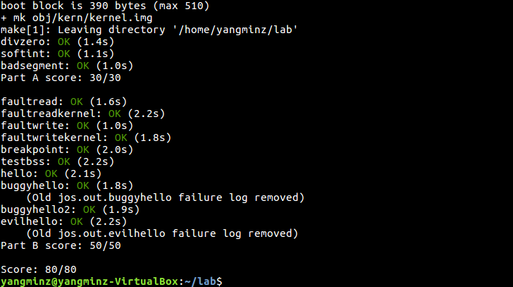
change debuginfo_eip in kern/kdebug.c
在kern/kdebug.c中增加对应的代码即可：
// Make sure this memory is valid.
// Return -1 if it is not. Hint: Call user_mem_check.
// LAB 3: Your code here.
if(user_mem_check(curenv, usd, sizeof(struct UserStabData), PTE_U) < 0)
return -1;
和
// Make sure the STABS and string table memory is valid.
// LAB 3: Your code here.
if( (user_mem_check(curenv, stabs, stab_end - stabs, PTE_U) < 0) ||
(user_mem_check(curenv, usd, stabstr_end - stabstr, PTE_U) < 0))
return -1;
不知道怎么搞的，我的kern/monitor.c:static struct Command commands[]里面没有mon_backtrace()，但是这个函数已经在lab1中写好了，所以简单地加行去就行。接下来修改kern/init.c : i386_init()或者直接make run-breakpoint运行，backtrace的调试信息如下：
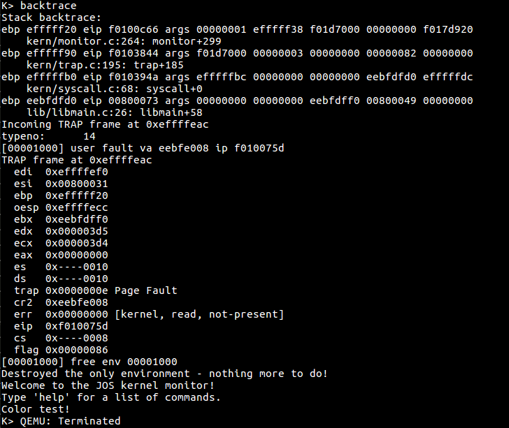
可见，是在libmain的第26行代码出现了page fault，这行代码是调用了exit()函数。
Note that the same mechanism you just implemented also works for malicious user applications (such as user/evilhello).
Exercise 10. 不做：Boot your kernel, running user/evilhello. The environment should be destroyed, and the kernel should not panic. You should see:
[00000000] new env 00001000 ... [00001000] user_mem_check assertion failure for va f010000c [00001000] free env 00001000
This completes the lab. Make sure you pass all of the make grade tests and don't forget to write up your answers to the questions and a description of your challenge exercise solution in answers-lab3.txt. Commit your changes and type make handin in the lab directory to submit your work.
Before handing in, use git status and git diff to examine your changes and don't forget to git add answers-lab3.txt. When you're ready, commit your changes with git commit -am 'my solutions to lab 3', then make handin and follow the directions.